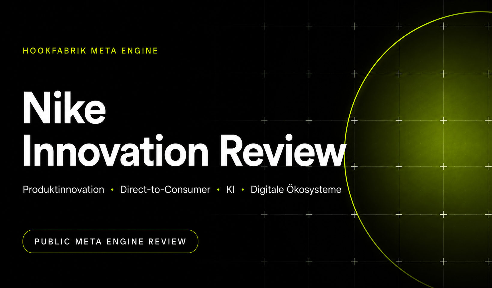

Nike verbindet Produktinnovation, Athleten-Storytelling und globale Distribution besser als fast jede andere Sportmarke.

Strategisches Zukunftsreview
Nike: Wie die weltweit führende Sportmarke auch 2036 noch führt
Eine öffentliche Meta-Engine-Session zur Frage, wie Nike sein Produkt-, Marken- und Distributionsmodell in ein lernendes Sportökosystem überführen muss.
Kernbefund: Nike verliert seine Führung nicht primär an bessere Werbung, sondern dort, wo spezialisierte Wettbewerber schneller lernen, lokaler handeln und Athleten kontinuierlicher begleiten.
Was die Meta Engine bei dieser Aufgabe leisten sollte
Die Engine soll nicht Nike beschreiben. Sie soll aus einer offenen Zukunftsfrage eine überprüfbare strategische Entscheidung ableiten.
1. Kernfrage schärfenNicht „Wie wächst Nike?“, sondern: Welche Fähigkeiten sichern globale Sportführerschaft über zehn Jahre?
2. Evidenz trennenFakten, Schlussfolgerungen und Annahmen werden sichtbar getrennt.
3. Kräfte modellierenTechnologie, Konsumenten, Wettbewerb, Kanäle und Supply Chain werden als System betrachtet.
4. Szenarien testenMehrere plausible Zukunftswelten verhindern eine lineare Fortschreibung.
5. Optionen vergleichenJede Option wird auf Wirkung, Risiko, Umsetzbarkeit und Robustheit geprüft.
6. Entscheidung verdichtenDie Empfehlung muss Prioritäten setzen und bewusst auf Alternativen verzichten.
Die Engine soll nicht beweisen, dass Nike stark ist. Sie soll zeigen, unter welchen Bedingungen diese Stärke erodiert – und welche Architektur dagegen am robustesten ist.
Methodik und Evidenzlogik
Fakt durch Geschäftsberichte, Unternehmensmeldungen oder etablierte Marktquellen belegt.
Schlussfolgerung aus mehreren Fakten abgeleitet.
Annahme notwendige, noch nicht vollständig verifizierbare Grundlage.
Die Analyse folgt der Meta Engine v3.7: Problemdefinition, Systemmodell, Gegenhypothesen, Szenarien, Optionen, Red Team und strategische Synthese.
Executive Summary
46,4 Mrd. $Umsatz FY2026
−9 %NIKE Direct FY2026
−12 %NIKE Brand Digital FY2026
+7 %Wholesale FY2026
Strategische Diagnose
Nikes Marke, Athletenzugang, Produktwissen und globale Reichweite bleiben außergewöhnlich. Das bisherige Wachstumsmodell ist jedoch zu stark auf Produktzyklen, Kampagnen und Kanalsteuerung ausgerichtet. Die nächste Führungslogik entsteht durch kontinuierlichen Nutzen: Training, Passform, Recovery, Community und intelligente Verfügbarkeit.
Empfehlung
Nike Athlete Network: ein globales Sportbetriebssystem aus Performance-Produkten, KI-gestützter Begleitung, Community, offenem Marketplace und adaptiver Supply Chain.
Die Kernfrage
Wie muss sich Nike entwickeln, um auch in den nächsten zehn Jahren die weltweit führende Sportmarke zu bleiben?
Was „führend“ hier bedeutet
- erste Wahl für Athleten in den wichtigsten Sportkategorien,
- höchste kulturelle Relevanz über Generationen und Regionen,
- überlegene Innovations- und Lernfähigkeit,
- profitables Wachstum ohne Abhängigkeit von einem einzelnen Kanal,
- Vertrauen bei Daten, Nachhaltigkeit und gesellschaftlicher Wirkung.
Ausgangslage: Stärke mit strukturellem Warnsignal
Eigene Kanäle versprachen Daten, Marge und Kontrolle. Gleichzeitig verlor Nike Reichweite, lokale Beratung und Marktplatznähe.
Das Unternehmen korrigiert Überdistribution, Franchise-Müdigkeit und Kanalspannungen. Wholesale stabilisiert sich, Digital und Direct bleiben unter Druck.
Die Frage ist nicht mehr DTC gegen Wholesale, sondern wie Nike alle Kontaktpunkte zu einem lernenden Athletensystem verbindet.
Die acht Veränderungskräfte
KIVon Produktempfehlungen zu Coaching, Passform, Belastungssteuerung und Design.
PersonalisierungRelevanz entsteht situativ: Sportart, Körper, Ziel, Ort und Lebensphase.
Digitale ProdukteWert verschiebt sich vom Kaufmoment zur laufenden Nutzung.
CommunityLokale Gruppen und Creator bestimmen tägliche Glaubwürdigkeit.
DirektvertriebEigene Kanäle bleiben wichtig, dürfen Reichweite und Beratung aber nicht ersetzen.
Supply ChainGeschwindigkeit und kleine, validierte Serien werden strategischer als reine Skaleneffizienz.
NachhaltigkeitSie muss Haltbarkeit, Materialleistung und Resilienz verbessern.
Neue WettbewerberOn, Hoka, Lululemon, Anta und lokale Spezialisten gewinnen über Fokus und Nähe.
Strategische Zukunftsszenarien
| Szenario | Gewinnerlogik | Nike-Risiko | Implikation |
|---|---|---|---|
| A · Product Renaissance | Material- und Performance-Sprünge treiben Nachfrage. | Nike gewinnt nur bei klarer Innovationsführerschaft. | Core R&D priorisieren. |
| B · AI Athlete | Persönliche Assistenz steuert Training, Auswahl und Recovery. | Plattformen besitzen die Beziehung zum Athleten. | Eigene vertrauenswürdige Intelligenz aufbauen. |
| C · Community Commerce | Lokale Clubs, Creator und Händler organisieren Nachfrage. | Globale Kampagnen verlieren Alltagsrelevanz. | Lokale Entscheidungsrechte erhöhen. |
| D · Volatile World | Resilienz, Preis und Verfügbarkeit dominieren. | Starre globale Supply Chains werden zum Nachteil. | Adaptive Wertschöpfung entwickeln. |
Kausalmodell: Warum Führung erodieren kann
These: Nikes Problem ist kein einzelner Kanalfehler. Es ist eine Lücke zwischen globaler Markenstärke und lokaler Lerngeschwindigkeit.
- Globale Größe erhöht Reichweite, aber auch Komplexität.
- Komplexität verlangsamt Produkt-, Preis- und Marktentscheidungen.
- Langsamere Entscheidungen erzeugen Überbestände, Wiederholungen und geringere lokale Relevanz.
- Schwächere Relevanz erhöht Rabattdruck und senkt Datenqualität.
- Schlechtere Signale verstärken erneut die Abhängigkeit von großen Kampagnen und Volumenwetten.
Die eigentliche strategische Einheit ist nicht mehr der Kanal oder die Kampagne, sondern der Lernkreislauf vom Athletensignal bis zum verbesserten Produkt und Service.
Strategische Optionen
| Option | Vorteile | Nachteile | Urteil |
|---|---|---|---|
| Core Reset | Stärkt Performance-Glaubwürdigkeit und Fokus. | Keine vollständige Antwort auf Bindung und Geschwindigkeit. | Notwendig. |
| Marketplace Federation | Verbindet Reichweite, Beratung, Daten und Verfügbarkeit. | Komplexe Governance und Partnerabhängigkeit. | Fundament. |
| Athlete OS | Kontinuierlicher Nutzen, Datenvorteil, neue Services. | Hoher Investitions- und Datenschutzbedarf. | Stärkster Langfristhebel. |
| Local Creation Network | Schneller und kulturell relevanter. | Risiko von Fragmentierung und Duplikation. | Gezielt ausrollen. |
| Adaptive Supply Network | Weniger Abschriften, höhere Resilienz und Geschwindigkeit. | Umbauaufwand und höhere Stückkosten kleiner Serien. | Ökonomischer Enabler. |
Reality Check
| Annahme | Gegenargument | Urteil |
|---|---|---|
| Nike ist zu groß, um die Führung zu verlieren. | Kategorien können einzeln verloren gehen; Größe verdeckt lokale Erosion. | Verworfen |
| Mehr DTC schafft automatisch bessere Beziehungen. | Eine Transaktion ist keine dauerhafte Beziehung. | Verworfen |
| KI ist primär Recommendation. | Der größte Wert liegt in Training, Passform, Recovery und Motivation. | Erweitert |
| Globale Kampagnen sichern globale Relevanz. | Alltagsrelevanz wird lokal erzeugt. | Nur teilweise gültig |
| Nachhaltigkeit trägt einen dauerhaften Preisaufschlag. | Konsumenten zahlen eher für Leistung, Haltbarkeit und Design. | Neu formuliert |
Übergeordnete Strategie: Nike Athlete Network
Globales Sportbetriebssystem. Lokal aktiviert. Offen distribuiert. Durch Performance legitimiert.
Performance FirstJede Initiative muss Sportleistung, Komfort, Motivation oder Zugang verbessern.
One Athlete GraphEinwilligungsbasiertes Datenmodell über Ziele, Nutzung, Passform und Community.
Federated MarketplaceKanäle werden nach Aufgabe orchestriert, nicht ideologisch gegeneinander gestellt.
Local Speed, Global ScaleLokale Rechte für Produktkapseln, Events, Creator und Tests.
Demand-to-Make LoopNutzungs- und Communitysignale steuern Mengen, Replenishment und Materialwahl.
Trust by DesignDatenschutz, Erklärbarkeit und Kontrolle werden Teil des Markenversprechens.
Warum diese Strategie langfristig am stärksten ist
Sie kombiniert Nikes schwer kopierbare Assets mit Fähigkeiten, die im alten Modell fehlen: kontinuierliches Lernen, lokale Geschwindigkeit und wiederkehrenden digitalen Nutzen. Sie bleibt in allen vier Szenarien tragfähig und hängt weder von einem einzelnen Kanal noch von einem Produktzyklus ab.
Quellen
- NIKE, Inc.: FY2026 Fourth Quarter and Full Year Results, 30. Juni 2026.
- NIKE Investor Relations: Annual Report / Form 10-K 2026.
- NIKE Newsroom: AI-powered Shopping on Google, 19. Mai 2026.
- NIKE Sustainability: aktuelle Programme und Kennzahlen.
- Reuters: Nike China turnaround, 22. Juli 2026.
Annahmen und Grenzen
Interne Produkt-Roadmaps, Profitabilität einzelner Kanäle, Datenarchitektur und regionale Entscheidungsgeschwindigkeit sind nicht öffentlich. Szenarien und Kausalurteile sind strategische Schlussfolgerungen, keine Darstellung interner Nike-Pläne.
- Die weltweite Sportmarkenführung bleibt ein sinnvolles strategisches Ziel.
- Digitale Begleitung ergänzt physische Produkte, ersetzt sie aber nicht.
- Partner bleiben für Reichweite und lokale Beratung strukturell relevant.
Fazit
Nike darf die nächste Dekade nicht mit einer perfektionierten Version des alten Modells gewinnen wollen.
Nike bleibt führend, wenn die Marke nicht nur Produkte für Athleten verkauft, sondern jeden Athleten kontinuierlich besser macht.
Die strategische Entscheidung lautet deshalb: Investitionen werden danach priorisiert, ob sie das Nike Athlete Network stärken – eine gemeinsame Infrastruktur aus Performance-Produkten, KI-gestütztem Nutzen, Community, offenem Marketplace und adaptiver Wertschöpfung.
Weitere Meta Engine Reviews
Weitere öffentliche Analysen aus der Meta Engine Review Bibliothek.